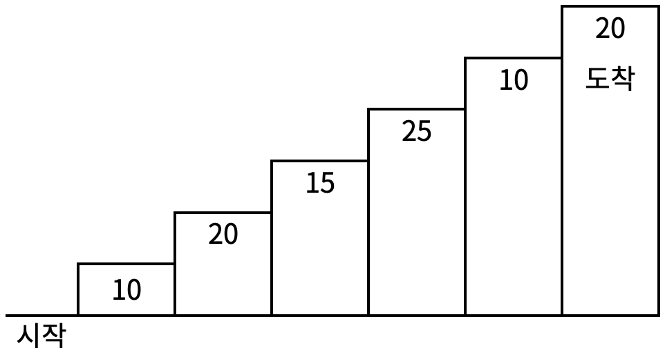
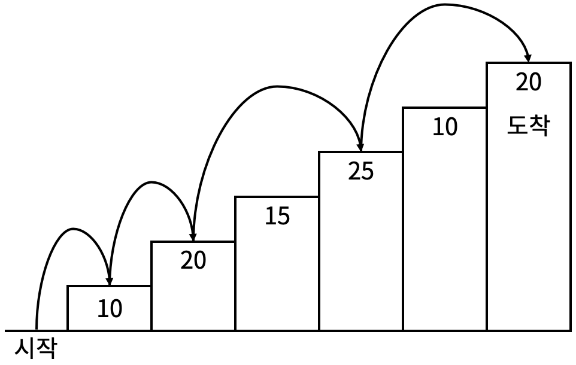
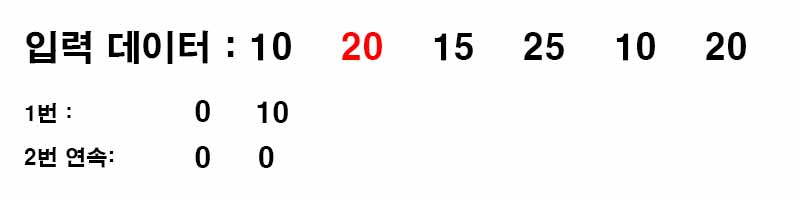
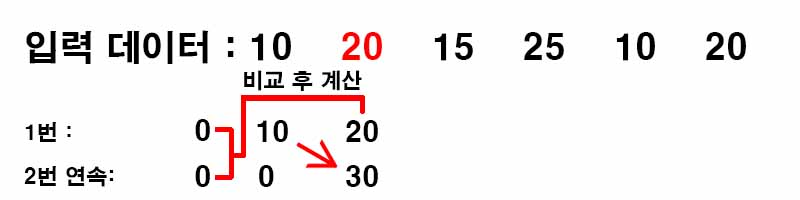
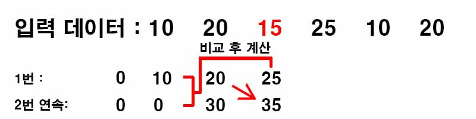
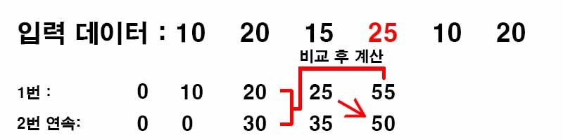
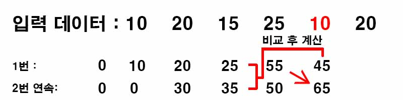
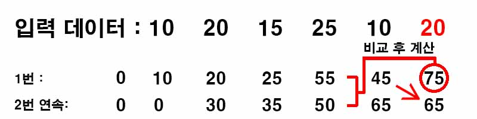

백준 2579. 계단 오르기
- https://www.acmicpc.net/problem/2579
-
문제 :
계단 오르기 게임은 계단 아래 시작점부터 계단 꼭대기에 위치한 도착점까지 가는 게임이다. <그림 1>과 같이 각각의 계단에는 일정한 점수가 쓰여 있는데 계단을 밟으면 그 계단에 쓰여 있는 점수를 얻게 된다.

<그림 1>
예를 들어 <그림 2>와 같이 시작점에서부터 첫 번째, 두 번째, 네 번째, 여섯 번째 계단을 밟아 도착점에 도달하면 총 점수는 10 + 20 + 25 + 20 = 75점이 된다.

<그림 2>
계단 오르는 데는 다음과 같은 규칙이 있다.
1. 계단은 한 번에 한 계단씩 또는 두 계단씩 오를 수 있다. 즉, 한 계단을 밟으면서 이어서 다음 계단이나, 다음 다음 계단으로 오를 수 있다.
2. 연속된 세 개의 계단을 모두 밟아서는 안 된다. 단, 시작점은 계단에 포함되지 않는다.
3. 마지막 도착 계단은 반드시 밟아야 한다.
따라서 첫 번째 계단을 밟고 이어 두 번째 계단이나, 세 번째 계단으로 오를 수 있다. 하지만, 첫 번째 계단을 밟고 이어 네 번째 계단으로 올라가거나, 첫 번째, 두 번째, 세 번째 계단을 연속해서 모두 밟을 수는 없다.
각 계단에 쓰여 있는 점수가 주어질 때 이 게임에서 얻을 수 있는 총 점수의 최댓값을 구하는 프로그램을 작성하시오. -
입력 :
입력의 첫째 줄에 계단의 개수가 주어진다.
둘째 줄부터 한 줄에 하나씩 제일 아래에 놓인 계단부터 순서대로 각 계단에 쓰여 있는 점수가 주어진다. 계단의 개수는 300이하의 자연수이고, 계단에 쓰여 있는 점수는 10,000이하의 자연수이다. -
출력 :
첫째 줄에 계단 오르기 게임에서 얻을 수 있는 총 점수의 최댓값을 출력한다. -
풀이 :
계단을 올랐을 때 현재 계단까지 얻은 점수의 최댓값을 저장해가면서 최종적으로 마지막 계단에 올랐을 때 최댓값을 구하는 형식으로 문제를 풀이하였다.
주의해야 할 점은 규칙에서 연속으로 올라갈 수 있는 계단은 2번까지이다. 때문에 올라갈 때 내가 현재 계단에 올라갈 수 있는 지 없는 지 확인하는 절차가 필요하다.
계단을 연속으로 한번만 올라갔을 때는 현재 계단을 올라갈 때 두 계단을 올라온 것이므로 두 계단 전의 데이터를 이용한다.
계단을 연속으로 두번 올라갔을 때는 현재 계단을 올라갈 때 한 계단을 올라온 것이므로 한 계단 전 데이터를 이용하지만 한번만 올라갔을 때의 데이터만을 이용한다.

한번이라도 올랐던 데이터가 없으므로 2번 연속 올랐을 때의 값은 없다.

두 번째 계단부터는 쌓은 데이터를 통해 계산해 나간다.




마지막에 두 수 중에 큰 쪽의 값을 출력한다.